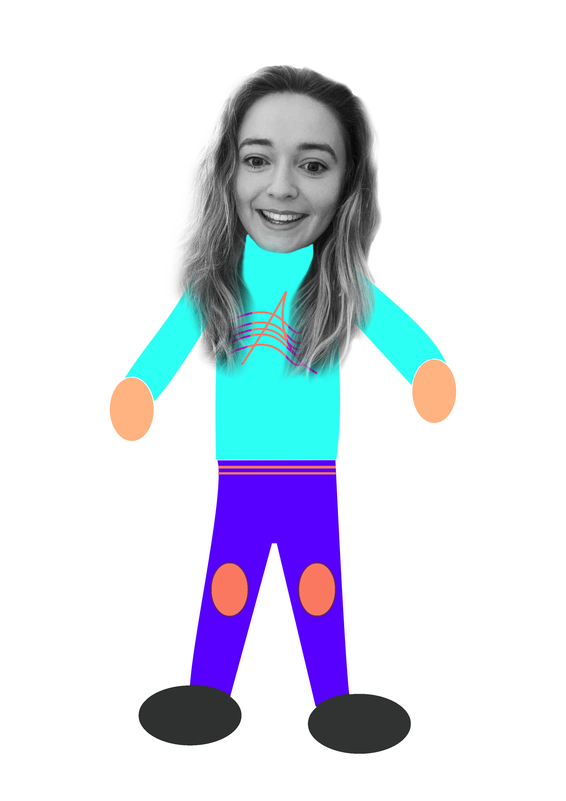

"Sustainable streets" is a scroll triggered interactive
website designed as part of a MA. Research project.
It is aimed to drive awareness about fast fashion and
reveal solutions and changes that can be made towards
the consumption of fashion.
Check it out and please share if you think others should know!
If you would like to contact me my email is megansarah94@gmail.com
Thank you!
Half a tonne of clothing every minute is dumped into a landfill in Ireland.
The fashion industry
is also the second
largest polluter
in the world.
Every year....
1,500,000,000,000 (1.5 trillion)
litres of water are used... for fashion
750,000,000
people dont have access to drinking water... because of fashion
70,000,000
barrels of oil are used to make polyester... for fashion
70,000,000
trees are cut down... for fashion
There is no
planet B,
but there is
a Plan B!
Charity shops in
Ireland sold 11.5
million garments
in 2019…
That’s 11.5
million
garments not in
landfills!

So what you can DO is.....
Be part of the
solution, not part of the
pollution.
Scroll
(1/4) Swap and borrow from
friends and family,
tag team that shirt!
One person’s
trash is
another’s
treasure, donate to charities and pick up some gems while you are there.
Scroll
(2/4) Ask yourself will I wear it 30 times? If not it’s not worth it!
A penny saved
is a penny
earned. Also a cotton
t-shirt not bought is
enough emissions saved
to drive 56 kilometers
in a car. Fast fashion is
only cheaper if
we actually wear
the clothes.
When something is
cheap we tend
to not value it.
Scroll
(3/4) Buy from charity and vintage shops or from locally produced brands instead of from faceless retail
giants.
It keeps $$ in your community while lowering your carbon footprint.
Scroll
(4/4) Mend a piece of clothing every season. Scars tell stories, look at your clothes as a part of your
self-identity.
I got this hole in Berlin
at the coolest bar ever! This jacket could tell some stories, I love it!
Scroll
55% of Irish people agree that climate change “is the most serious issue facing the world” (The Irish
Times)